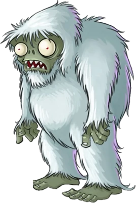
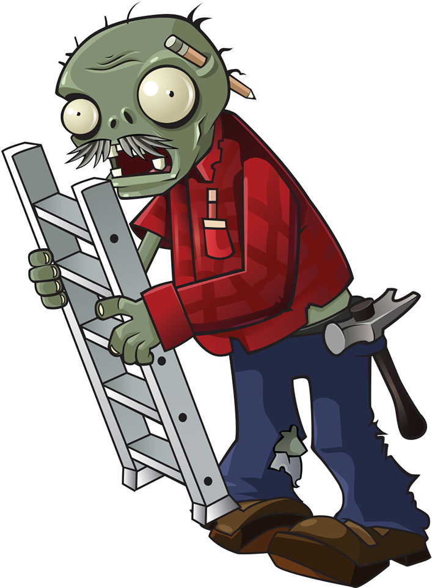

Zombies
◄ Back
 Zombie Regular Garden-variety Zombie Toughness: low NOTES: This zombie loves brains. Can't get enough. Brains, brains, brains, day in and night out. Old and stinky brains? Rotten brains? Brains clearly past their prime? Doesn't matter. Regular zombie wants 'em. |
 Flag Zombie Flag Zombie marks the arrival of a huge pile or "wave" of zombies. Toughness: low NOTES: Make no mistake, Flag Zombie loves brains. But somewhere down the line he also picked up a fascination with flags. Maybe it's because the flags always have brains on them. Hard to say. |
 Conehead Zombie His traffic cone headpiece makes him twice as tough as normal zombies. Toughness: medium NOTES: Conehead Zombie shuffled mindlessly forward like every other zombie. But something made him stop, made him pick up a traffic cone and stick it on his head. Oh yeah. He likes to party. |
Pole Vaulting Zombie A vaulting zombie, single jump, jumps over the first plant it encounters with a pole. |
Buckethead Zombie His bucket hat makes him extremely resistant to damage. Toughness: high Weakness: magnet-shroom NOTES: Buckethead Zombie always wore a bucket. Part of it was to assert his uniqueness in an uncaring world. Mostly he just forgot it was there in the first place. |
 Newspaper Zombie His newspaper provides limited defense. Toughness: low Newspaper Toughness: low Speed: normal, then fast (after losing his newspaper) NOTES: Newspaper Zombie was *this* close to finishing his Sudoku puzzle. No wonder he's freaking out. |
| Screen Door Zombie His screen door is an effective shield Toughness: low Screen Door Toughness: high Weakness: fumeshroom and magnet-shroom NOTES: He got his screen door from the last inexpertly defended home he visited, after he ATE THE HOMEOWNER'S BRAINS. |
Dancing Zombie Any resemblance between Dancing Zombie and persons living or dead is purely coincidental. Toughness: medium Special: summons back-up dancers NOTES: Dancing Zombie's latest album, "GrarrBRAINSarblarbl," is already rocketing up the undead charts. |
Backup Dancer Zombie These zombies appear in sets of four whenever Dancing Zombie rocks out. Toughness: low NOTES: Backup Dancer Zombie spent six years perfecting his art at the Chewliard Performing Arts School in Zombie New York City. |
Duckytube Zombie The ducky tube allows this zombie to float on water Toughness: low *Only appears in the pool NOTES: It takes a certain kind of zombie to be a Ducky Tuber. Not every zombie can handle it. Some crack. They can't take it. They walk away and give up on brains forever. |
Snorkel Zombie Snorkel zombies can swim underwater Toughness: low Special: submerges to avoid attacks *Only appears in the pool NOTES: Zombies don't breathe. They don't need air. So why does Snorkel Zombie need a snorkel to swim underwater? Answer: peer pressure. |
Zomboni The Zomboni applies ice, steam and pressure to your plants. Toughness: high Special: crushes plants, leaves an ice trail NOTES: Often mistaken for a zombie driving an ice machine, the Zomboni is a totally different life-form more closely related to a space ogre than a zombie. |
| Zombie Bobsled Team *These zombies appear in teams of four Toughness: low (each zombie) Bobsled Toughness: low Special: only appears on ice NOTES: Zombie Bobsled Team worked hard to get where they are. They live together, eat brains together, and train together to become a cohesive zombie unit. |
Dolpin Rider Zombie Dolphin Rider Zombie use dolphins to exploit weaknesses in your pool defense. Toughness: medium Speed: fast, then slow (after jump) Special: jumps over the first plant he runs *Only appears in the pool NOTES: The dolphin is also a zombie. |
Jack-in-The-Box Zombie This Zombie carries an explosive surprise Toughness: medium Speed: fast, then slow (after jump) Special: jack-in-the-box explodes Weakness: magnet-shroom NOTES: This zombie shivers, not because he's cold but because he's crazy. |
Balloon Zombie Balloon Zombie floats above the fray, immune to most attacks. Toughness: low Special: flying Weakness: cactus and blover NOTES: Balloon Zombie really lucked out. The balloon thing really works and none of the other zombies have picked up on it. |
Digger Zombie This zombie digs to bypass your defenses. Toughness: medium Special: tunnels underground and appears on the left side of the lawn Weakness: split pea and magnet-shroom NOTES: Digger Zombie spends three days a week getting his excavation permits in order. |
Pogo Zombie Pogo Zombie hops to bypass your defenses. Toughness: medium Special: hops over plants Weakness: magnet-shroom NOTES: Sproing! Sproing! Sproing! That's the sound of a powerful and effective zombie doing what he does best. |
|  Zombie Yeti A rare and curious creature Toughness: high Special: runs away after a short while NOTES: Little is known about the Zombie Yeti other than his name, birth date, social security number, educational history, past work experience, and sandwich preference (roast beef and Swiss). |
Bungee Zombie Bungee Zombie attacks from above Toughness: medium Special: descends from the sky and steals a plant NOTES: Bungee Zombie loves to take risks. After all, what's the point of being dead if you don't live a little? |
 Ladder Zombie Ladder Zombie climvs over obstacles Toughness: medium Ladder Toughness: medium Special: fast, then slow (after placing ladder) Weakness: fume-shroom and magnet-shroom NOTES: He picked up the ladder up for $8.99. |
Catapult Zombie Catapult Zombie operates heavy machinery Toughness: medium Special: lobs basketball at your plants NOTES: Of all the things Catapult Zombie could launch with his catapult, basketballs seemed like the best and most obvious choice. |
Gargantuar Gargantuar is a gigantic zombie.
NOTES: When Gargantuar walks, the earth trembles. When he growls, other zombies fall silent. He is the zombie other zombies dream they could be. But he still can't find a girlfriend. |
 Imp Imps are tiny zombies hurled by Gargantuars deep into your defenses Toughness: low NOTES: Imp may be small, but he's wiry. He's proficient in zombie judo, zombie karate, and zombie bare-knuckle brawling. He also plays the Melodica |